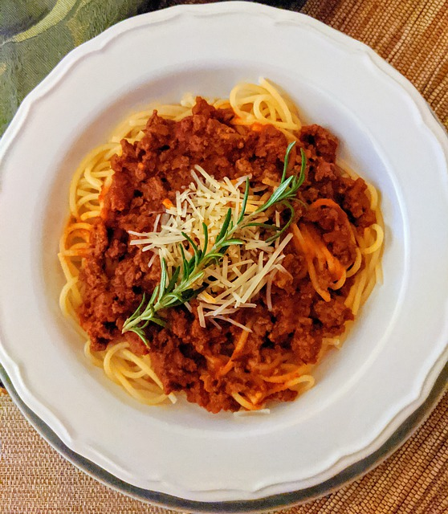

Sean's Spag Bol

Description
A good spaghetti bolognese or "Spag Bol" as it's known to the refined man may be simple but can be life changing.
Disclaimer: This recipe is not claiming to be life changing and any change to your or relatives lives as a result of this recipe
are purely coincidental and not the responsiblity of the recipe author
Ingredients
- 1 red onion
- 1 pack of closed cup mushrooms
- 1 pack of 5% fat beef mince or supermarket brand frozen veggie mince
- Pasta - Spaghetti or Rigatoni
- Extra Mature Cheddar Cheese
- Salt and Pepper
- Oregano
- 1 tin of chopped tomatoes
- Worcester Sauce
Steps
- Peel and slice the red onion, and chop the mushrooms
- Add the red onion to a frying pan with a little oil and fry for a couple mins on high heat
- Add mushrooms to the same pan and cook until soft
- Once the mushrooms are soft, add the mince to the pan and break into smaller chunks if needed so it is easier to cook.
- Continue to cook until the mince has browned all over.
- Boil the water for the pasta
- Add pasta to the boiling water with a pinch of salt and stir in.
- Add tin of chopped tomatoes to the mince, 1 tbsp of tomato puree and stir together until it is all covered.
- Add a 1 tsp of orgeano and 1 tbsp of worcester sauce to the mince and stir together
- Reduce the heat to medium and allow to simmer and cook on low heat for 10 mins
- Once the pasta has cooked (10-12 mins), drain it and add portion into large bowls
- Add spoonfuls of bolognese generously to the top of each portion of pasta
- Add grated cheddar cheese on top and serve (Parmesan can be used instead if desired)